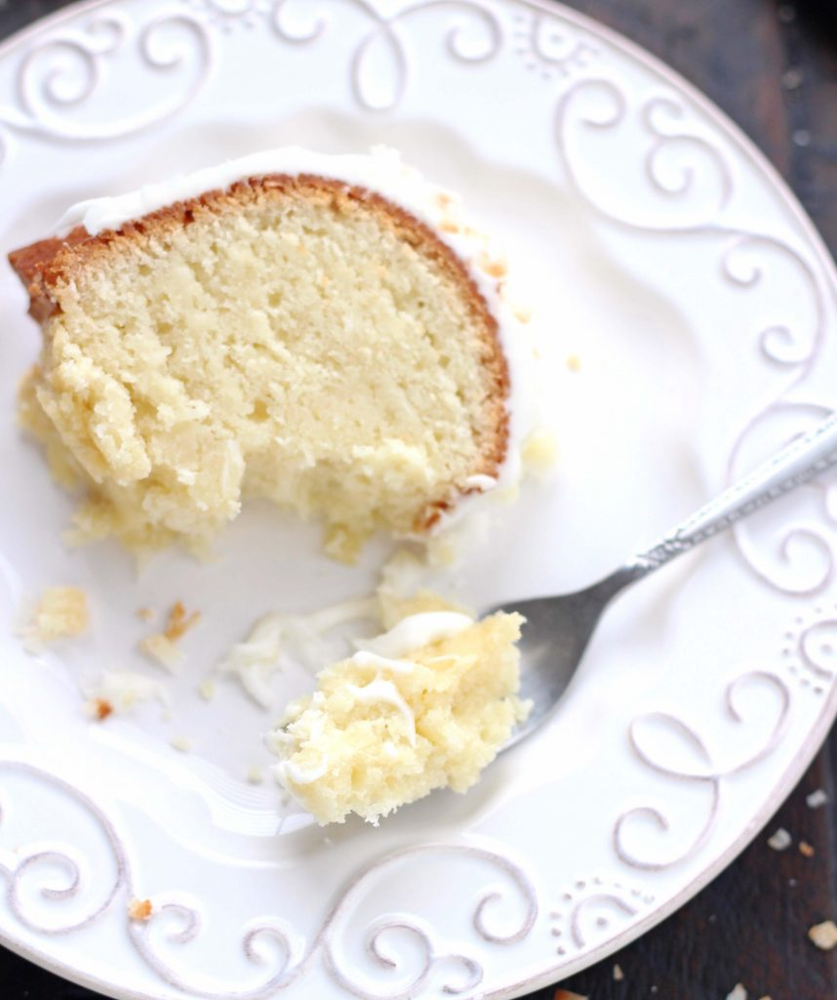
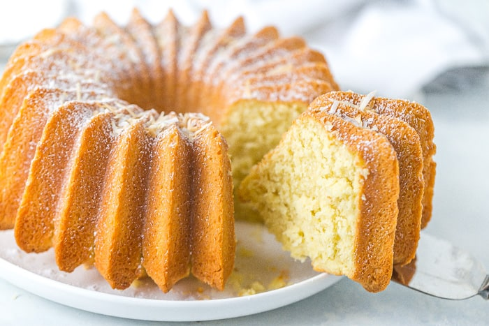
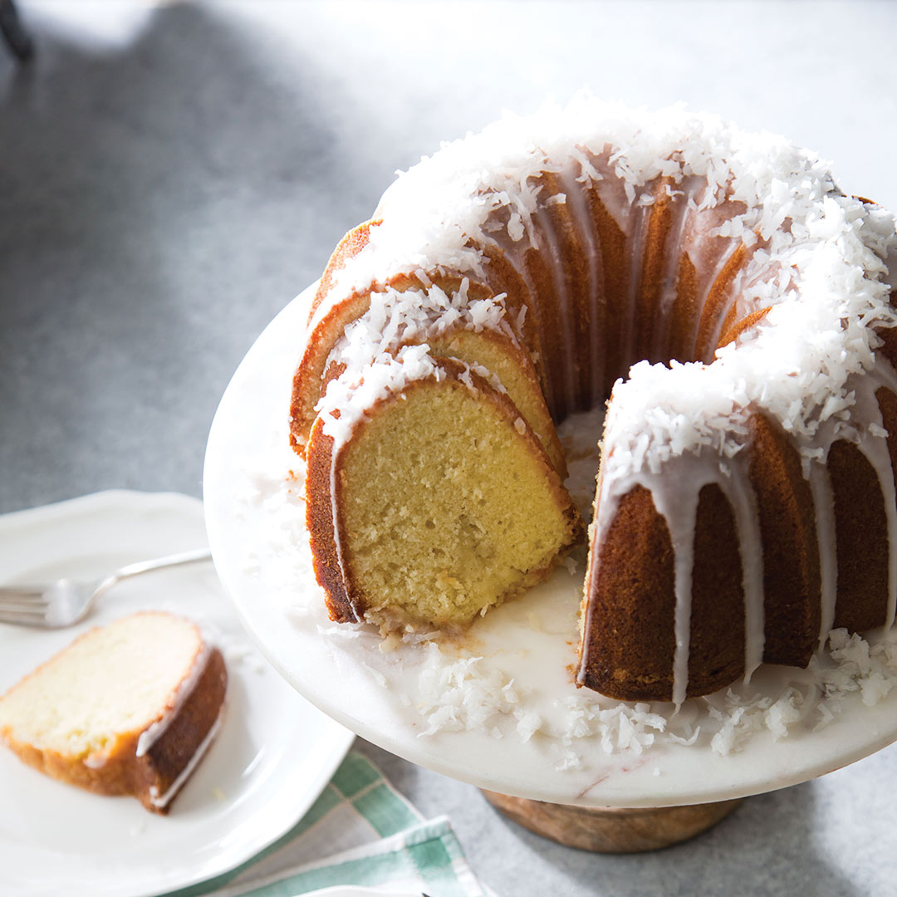
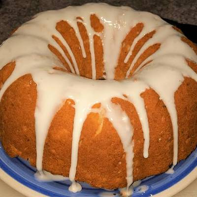

07/Jan
Coconut Bundt Cake with White Chocolate Frosting
Last week flew by and before I knew it, it was time to plan the menu for Sunday dinner. Sundays have been a perfect opportunity for me to experiment with new dessert recipes ,especially those that serve tons of people, since we help polishing it all off and don't have it sitting the house, tempting us for days

Are you a box mix bundt cake person? Or a from-scratch bundt cake person?
Truth be told, it's REALLY hard to replicate that always-moist-and-fluffy texture that everyone loves about a box cake mix, but at the same time, we also love homemade, right?!
It took me a LONG time to find a homemade bundt cake that I really, really loved Bax cake mixes seem to always bake up perfectly fluffy and moist bundt cakes, and the ones I've had rom bakenies have been great as well but I just couldn't seem to replicate it at home no manter how many recipes I tried. (Consequently, I haven't had the same issue with chocolate cakes! See: Seackers Cake-the base recipe for all of my chocolate cakes!)
Mary were too dense, too dry, too chiffon-like, too fussy in their preparation I just wanted a fantastic bundt cake recipe I could use for buthday cakes that was easy to make and narned out delicioos Iceme across this recipe from Joy while I was on the hunt for vet another recipe to test out for Joseph's birthday
This was IT The recipe that had eluded me for years!

I love that this can easily be mixed together in one bowl using my hand mixer, there's nothing fussy about the ingredients or preparation, and it produces an absolutely perfect bundt cake The layers are light but sturdy, buttery and moist, and the ideal base for your very favorite chocolate frosting
I used the chocolate frosting recipe from my ultimate chocolate cupcakes, and it was a wonderful companion to this cake The frosting is more buttery than sugary, satiny smooth and full of rich chocolate flavor It glides on like a dream!
bundt cake tends to be the elusive unicorn of homemade baking; so many cakes can turn out too dry, too crumbly, too dense, too cornbread-like, and I have one major piece of advice for ensuring bundt cake perfection:
Make sure all of the ingredients listed "at room temperature" ARE ACTUALLY AT ROOM TEMPERATURE.
I've totally been there and have used still-cool butter, eggs or dairy in a recipe when I'm in a hurry, but it's actually vitally important here. Having all of those ingredients at room temperature ensures that they emulsify, which traps air in the batter and, once in the oven, that air expands and produces a fluffy cake.
Room temperature ingredients also ensure that the batter comes together well and is ultra-smooth, which keeps the resulting cake from being crumbly or combread-like


